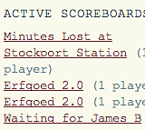

Social Scoreboards
- 
Having mini-competitions with friends happens all the time. Who’s made the most tea? Who’s run the most miles? We found ourselves using Twitter to assign brownie points via simple hashtags. Social Scoreboards was then built and designed as a service to tally up the scores and show us who's on top.
Anyone could set up a scoreboard by defining a hashtag and a set of players - any tweets from those players containing the hashtag and a + or - score are then totalled up. Simple.
One of our aims with this project was to experiment in how games could be socially defined, with no explicit rules and no anti-cheat mechanism: we even added a feature whereby players could deduct or assign points to each other.
The result was a lot of fun and provoked a lot of conversation.
This project has now been retired.